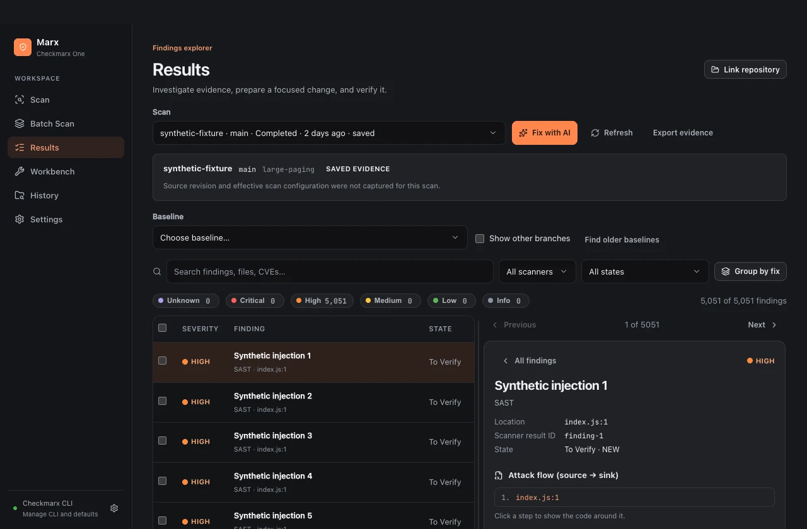
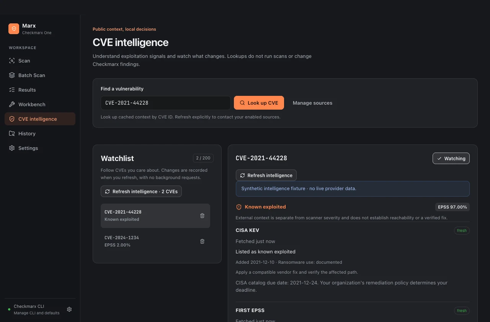

A handoff with substance.
Turn selected findings into a focused prompt for your coding assistant. Review the context, choose a batch, and copy when ready. Prompt generation stays on your computer.
Prepare a handoffA native desktop client for Checkmarx One. Configure scans, investigate source flows, and keep remediation decisions and verification evidence together.
Developer preview · Build from source · Independent project

Marx wraps your installed, official Checkmarx CLI. You get a desktop workflow for SAST and SCA, with the connection and analysis service you already use.

Add known exploitation, published probability and named sources to an explicit CVE finding. Scanner severity stays intact. Missing intelligence stays visible.

A DECISION HAS A SHELF LIFE
Record a decision with a rationale, review date and explicit assumptions. If a refresh finds that an assumption broke, Marx keeps the triggering evidence and asks for a review.
The original snapshot stays pinned. Local decisions do not silently change Checkmarx result states or declare a fix verified.
Follow the intelligence workflow
A short tour of the real interface: configure a scan, explore findings, prepare a local AI handoff, and keep the original evidence pinned.
Investigating a finding usually means gathering context, handing off a change, and checking what happened. Marx keeps that work together.
Turn selected findings into a focused prompt for your coding assistant. Review the context, choose a batch, and copy when ready. Prompt generation stays on your computer.
Prepare a handoffDiscover projects in a workspace, confirm each project mapping, and keep per-package scan options. Use a root scan when shared files need to be included.
Work across projectsPin the original findings in a remediation session. Keep notes, change references, and exports beside them, even when you refresh the current results.
Track remediationCompare a verification scan against its baseline. Incomplete or incompatible evidence stays inconclusive. A missing finding alone is not proof that a fix worked.
Understand verificationThe official CLI uploads your selected source to Checkmarx One for analysis. Optional public CVE intelligence sends selected CVE IDs to FIRST and CVE.org and downloads the CISA catalog. Sources start disabled; refresh is explicit. No source code or credentials go to these providers.
Workbench evidence is stored locally. Optional saved keys use OS-protected storage; exports and the evidence database still deserve care. Marx has no analytics service.
Checkmarx One access and an organization-approved CLI are required for real scans. The app is open source; Checkmarx services have their own licensing. Preview builds are not notarized or distribution-qualified on macOS. Marx is an independent project, not an official Checkmarx product.
Read the security boundaries